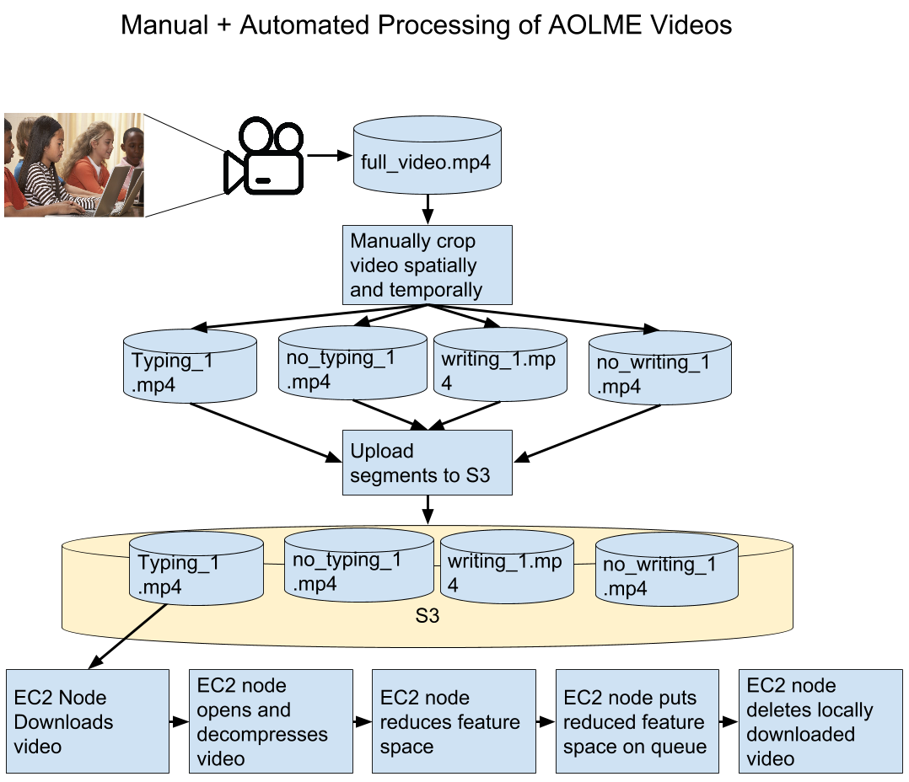
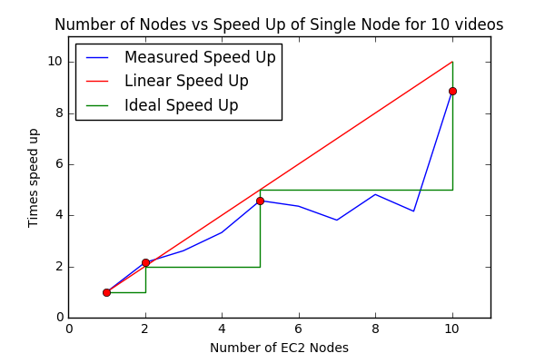
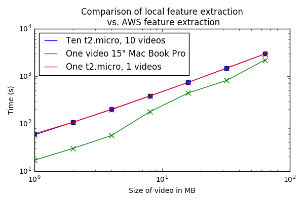

Distributed and Scalable Video Analysis Architecture for Human Activity Recognition Using Cloud Services
Cody W. Eilar
University of New Mexico
Introduction

Manual Video Analysis and Segmentation
- UNM College of Education in collaboration with ivPCL assessing quantifiable metrics for human learning in the classroom
- All videos currently manually annotated
- Videos manually analyzed
- Completely manual process is extremely time consuming
Extremely Large Video Datasets
- Huge AOLME dataset:
- Over 3 years of data collected
- 2500 hours of high quality video
- High estimate of cost (dollars) to analyze: 250,000.000 @ 10/hour
- Low estimate of cost (dollars) to analyze: 31,250.00 @ 10/hour
Extremely Large Video Datasets
 |
 |
 |
 |
 |
|---|---|---|---|---|
 |
 |
 |
 |
|
 |
 |
 |
 |
 |
 |
 |
 |
|
 |
Vertically and Horizontally Scalable Solutions
- Vertical: using resources on a single node such as memory, GPUs, CPUs etc.
- Horizontal: use hundreds of compute nodes if necessary
Data Reduction
- Reducing three-dimensional video cubes of GBs to KBs
- Extremely computationally expensive
- Minimize training time
- Minimize classification time
Open Source Software
- Facilitation of future research
- Robust reliable software that can be reused and improved
- Enable repeatability of results by anyone

Affordable Solution for University Research
Reduce the cost of doing human activity research by choosing a flexible and affordable solutionThesis Objectives
- Reduce feature space of videos to:
- Minimize training time
- Minimize classification time
- Design software that can scale horizontally and vertically to maximize efficacy of processing since feature reduction is a computationally expensive operation
- Accurately classify a subset of activities that are of interest to the UNM College of Education
- Typing
- Writing
- Provide core software with Open Source License
Background

Current Methods in Video Feature Reduction for Classification
- Edge trajectories + optical flow histogram + Fisher Vectors
- Fisher Vectors + structured temporal models + Gaussian mixed Models
- Dynamic trajectory + static deep features
- Spatio-Temporal Synchrony
Techniques for Classifying Reduced Feature Space
- Linear Support Vector Machines
- Multi Class Support Vector Machines
- Support Vector Machines + Principal Component Analysis
Techniques That Don't Need Reduced Feature Space
Convolutional Neural NetworksVideo Databases Currently Being Used for Method Validation
| Title | Description |
|---|---|
| UCF101 | A dataset of 101 human actions (13,320 videos) |
| KTH | Six types of human activity (2391 sequences) |
| Olympic | 16 olympic sports gathered from youtube |
| Toy Assembly | 29 sequences of 2-3 minute long sequences of a human assembling a toy from five different bins |
| CMU-MMAC | Database that contains multimodal measures of activities such as cooking and food preparation |
| MPIICooking | Database of 65 cooking activities (8.7GB of AVI formatted video), continuously recorded in a realistic setting |
Accuracy of Provided Methods
Most of the methods proved to be highly accurate with provided databases, usually within in the range of 70-90%.Current methods for distributed video analysis
- Distributed video analysis for toy tasks (i.e. copying and decryption)
- Proprietary software used by Netflix, Amazon, Google and other internet giants
- MapReduce Frameworks for image and text analysis


Analysis of Current Methods
- Human activity recognition methods are great but there are some limitations
- Long training times
- Little proof of scalability
- CNN methods require significant training data
Analysis of Current Methods
- Database limitations
- Many of the videos used do not constitute videos in the wild
- Some video datasets are very limited in the activities that they attempt to classify
- Some of the datasets are relatively small
- Some datasets contain more than just video data, such as trajectory analysis using gyroscopes etc.
Analysis of Current Methods
- Distributed and Scalable Processing Limitations
- Most MapReduce frameworks do not contain out-of-the box functionality for video analysis
- Previously proposed architectures only accomplish trivial tasks, e.g. copying and decryption
Methods

Architecture Design
Life of a Video
Master node configuration
Role is to populate video queue with videos from which to extract features and then retrieve CDFs from results queue.Slave node configuration
Responsible for popping videos off of video queue, extracting features from videos and then pushing results onto the results queue.Software Deployment
- Continuous Integration
- Test Driven Development
Continuous Integration
Vertical Scalability
OpenCL in combination with OpenCV's transparent API to enable vertically scalable algorithms. I leverage these ideas heavily for optical flow calculations.Optical Flow Implementation
Developed using OpenCV functions but with generic interface that leverages high performance dependency injection. Easily swap out algorithms, TAPI, and video readersComparison of Methods
- Though Lucas-Kanade was faster at calculating motion estimation, machine learning proved to not classify them well
- Farneback method, or dense optical flow, proved to provide better features for machine learning to shatter the class with a hyperplane


Feature Extraction From Optical Flow
- Large video datasets are broken into small 1-5MB videos to be processed by each node
- Videos are then broken into a handful of CDFs
Classifying the Reduced Feature Space
- Linear Support Vector Machines
- K Nearest Neighbors
- Train and testing on 40 typing/no typing and 40 writing/no writing video segments
Challenges
- Matching C++ real-time code to prototype MATLAB code
- GPU pass through in a Docker container
- Results looked good for a small subset of writing data (around 8 videos), but proved to be inadequate as more data points were added
- Making compute cluster easy to deploy required serious software engineering
Results & Discussion

Classification Results
| Typing | No Typing | |
|---|---|---|
| Typing | 19 | 1 |
| No Typing | 3 | 17 |
Accuracy: 90%


Classification Results
| Writing | No Writing | |
|---|---|---|
| Writing | 18 | 2 |
| No Writing | 11 | 9 |
Accuracy: 65%

Proof of Scalability
High Performance Local Node vs Cloud
S3 Performance for Downloading and Uploading Video Segments
Future Work
- Investigate low accuracy with writing
- Create larger AOLME ground truth dataset for more generalizable results
- Investigate real-time interaction with extracting and classifying features
- Expand work to autoscale based on size of video list queue
Conclusion
- In this thesis I have accomplished:
- Horizontally and vertically scalable video analysis architecture
- A novel feature extraction algorithm that greatly reduces feature space
- A free and open source software package that is continuous deployed and tested
- An novel and accurate algorithm for detecting typing in videos